Contents
introduction
prepare diffusion data
clear, clc, close all
load('data/multishell_vox.mat');
mask_b0 = bval == 0;
b0s = data(mask_b0);
dwis = data(~mask_b0);
data = [mean(b0s); dwis];
data = data / mean(b0s);
bval = [0; bval(~mask_b0)];
bvec = [[0, 0, 0]; bvec(~mask_b0, :)];
figure
plot(bval, data, '.');
grid on;
title('multi-shell diffusion signal');
xlabel('b-value (s/mm^2)');
ylabel('normalized signal');
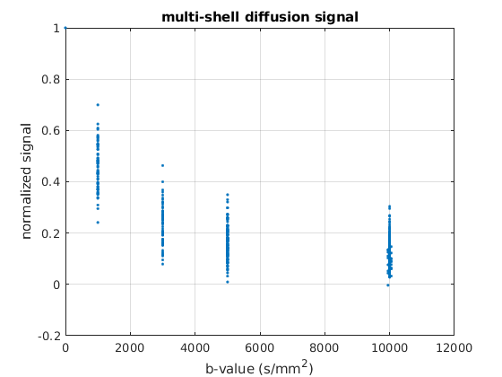
calculate q-space sampling density nonuniformity correction factor (Fig.4b in [1])
bval = bval(:);
disp('double check unique b values are:');
disp(unique(bval));
bval_rnd = round(bval / 200) * 200;
bval_uniq = unique(bval_rnd);
count = zeros(size(bval_uniq));
for ii = 1 : length(bval_uniq)
count(ii) = sum(bval == bval_uniq(ii));
end
qval_uniq = sqrt(bval_uniq / max(bval_uniq));
qval_contour = (qval_uniq(1 : end-1) + qval_uniq(2 : end)) / 2;
qval_contour = [qval_contour; 2 * qval_uniq(end) - qval_contour(end)];
qvol_shell = diff(qval_contour .^ 3);
qvol_shell = [qval_contour(1) .^ 3; qvol_shell];
qvol_shell = qvol_shell / qvol_shell(1);
qvol_samp = qvol_shell ./ count;
qvol = zeros(size(bval));
for ii = 1 : length(bval_uniq)
b = bval_uniq(ii);
qvol(bval == b) = qvol_samp(ii);
end
figure
plot(bval_uniq, qvol_samp, '-o');
grid on;
ylim([0, 1]);
title('sampling density nonuniformity correction factor');
xlabel('b-value (s/mm^2)');
ylabel('normalized correction factor');
double check unique b values are:
0
1000
3000
5000
9950
10000
10050
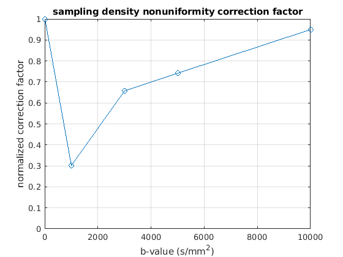
reconstruct 1D PDF profile along a specific direction (Fig.5f in [1])
nr = 100;
rs = linspace(0, 1, nr)';
pdf_dir = [0, 1, 0];
rvec = repmat(pdf_dir, [nr, 1]) .* repmat(rs, [1, 3]);
qvec = repmat(sqrt(6 * 0.0025 * bval), [1, 3]) .* bvec;
F = cos(rvec * qvec') / length(bval);
pdf_1d = F * diag(qvol) * data;
pdf_1d_clip = pdf_1d;
pdf_1d_clip(pdf_1d < 0) = 0;
pdf_1d_ringfree = pdf_1d;
ind_negative = find(pdf_1d < 0);
pdf_1d_ringfree(ind_negative(1):end) = 0;
figure, hold all
plot(rs, pdf_1d, 'r', 'LineWidth', 6);
plot(rs, pdf_1d_clip, 'g', 'LineWidth', 3);
plot(rs, pdf_1d_ringfree, 'b--', 'LineWidth', 2);
grid on;
legend('original', 'negative clip', '1st zero-xing clip')
title(['pdf profile along direction ' mat2str(pdf_dir)]);
xlabel('ratio of mean displacement distance of free water');
ylabel('diffusion probability density');
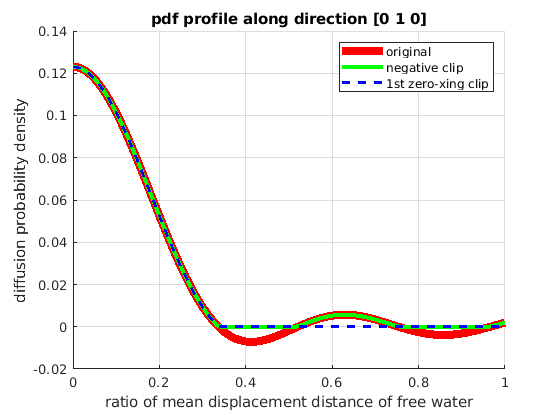
reconstruct 3D PDF contour at a specific distance (Fig.5j in [1])
[x, y ,z] = sphere(64);
fvc = surf2patch(x, y, z, z);
pdf_dirs = fvc.vertices;
figure
plot3(pdf_dirs(:,1),pdf_dirs(:,2),pdf_dirs(:,3), '.');
axis equal
grid on;
title('directions on a sphere');
r0 = 0.5;
rvec = r0 * pdf_dirs;
qvec = repmat(sqrt(6 * 0.0025 * bval), [1, 3]) .* bvec;
F = cos(rvec * qvec') / length(bval);
pdf_3d = F * diag(qvol) * data;
pdf_3d_clip = pdf_3d;
pdf_3d_clip(pdf_3d < 0) = 0;
pdf_actor = fvc;
pdf_actor.vertices = fvc.vertices .* repmat(pdf_3d, [1, 3]);
pdf_actor.facevertexcdata = pdf_3d;
figure
h = patch(pdf_actor);
view(0, 0)
lighting gouraud
shading faceted
camlight
set(h, 'EdgeColor', 'none');
colormap;
colorbar;
caxis([min(pdf_3d(:)), max(pdf_3d(:))]);
axis equal, axis off, axis tight
title(['pdf contour at ' num2str(r0) ' of MDD of free water']);
pdf_actor = fvc;
pdf_actor.vertices = fvc.vertices .* repmat(pdf_3d_clip, [1, 3]);
pdf_actor.facevertexcdata = pdf_3d_clip;
figure
h = patch(pdf_actor);
view(0, 0)
lighting gouraud
shading faceted
camlight
set(h, 'EdgeColor', 'none');
colormap;
colorbar;
caxis([min(pdf_3d(:)), max(pdf_3d(:))]);
axis equal, axis off, axis tight
title(['positive pdf contour at ' num2str(r0) ' of MDD of free water']);
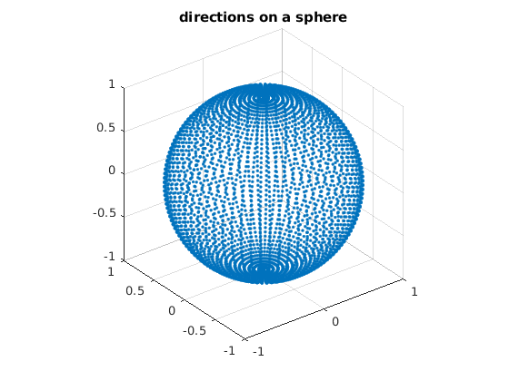 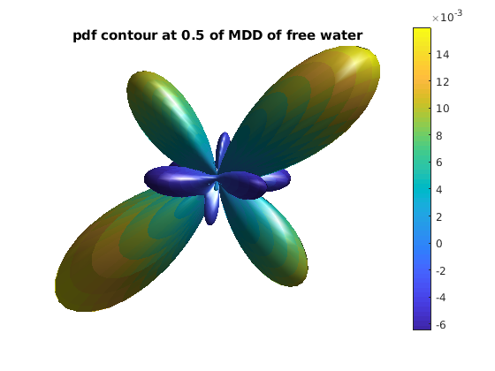 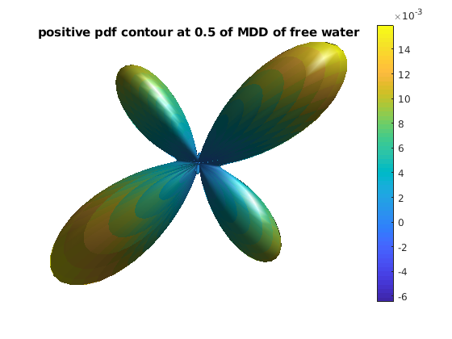
reconstruct ODF using direct approach (Fig.9 in [1])
[x, y ,z] = sphere(64);
fvc = surf2patch(x, y, z, z);
odf_dirs = fvc.vertices;
nr = 100;
rs = linspace(0, 0.8, nr)';
R = zeros(length(odf_dirs), length(data));
qvec = repmat(sqrt(6 * 0.0025 * bval), [1, 3]) .* bvec;
for ii = 1 : nr
r = rs(ii);
rvec = r * odf_dirs;
F = cos(rvec * qvec') / length(bval) * (r^2);
R = R + F;
end
odf_direct = R * diag(qvol) * data;
odf_actor = fvc;
odf_actor.vertices = fvc.vertices .* repmat(odf_direct, [1, 3]);
odf_actor.facevertexcdata = odf_direct;
figure
h = patch(odf_actor);
view(0, 0)
lighting gouraud
shading faceted
camlight
set(h, 'EdgeColor', 'none');
colormap;
colorbar;
caxis([min(odf_direct(:)), max(odf_direct(:))]);
axis equal, axis off, axis tight
title('direct odf');
for ii = 1 : length(bval_uniq)
b = bval_uniq(ii);
data_shell = data;
data_shell(bval_rnd ~= b) = 0;
odf_shell = R * diag(qvol) * data_shell;
odf_actor = fvc;
odf_actor.vertices = fvc.vertices .* repmat(odf_shell, [1, 3]);
odf_actor.facevertexcdata = odf_shell;
figure
h = patch(odf_actor);
view(0, 0)
lighting gouraud
shading faceted
camlight
set(h, 'EdgeColor', 'none');
colormap;
colorbar;
caxis([-0.1, 0.1]);
axis equal, axis off, axis tight
title(['component odf at b=' num2str(b)]);
end
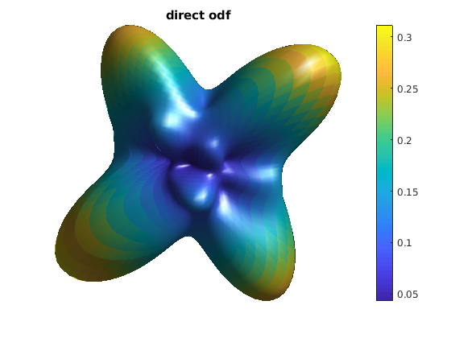 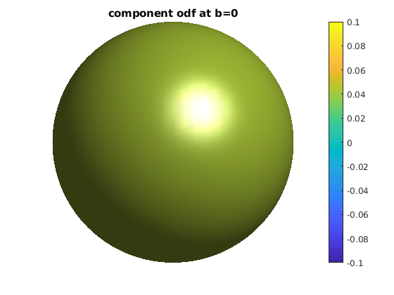 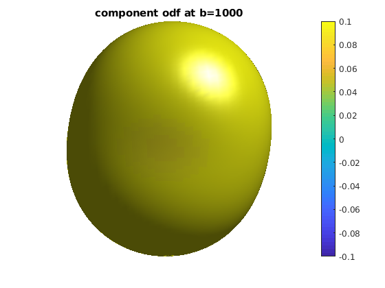 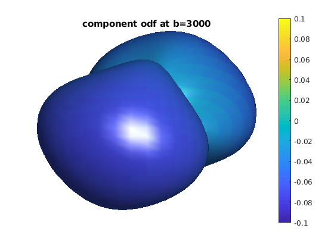 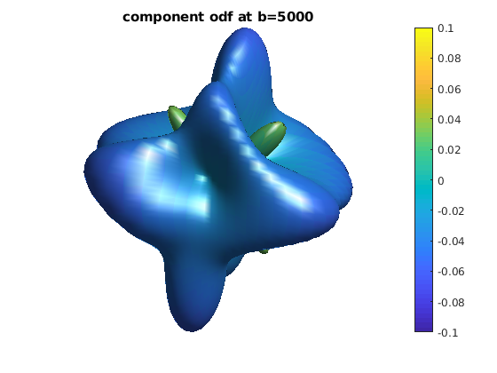 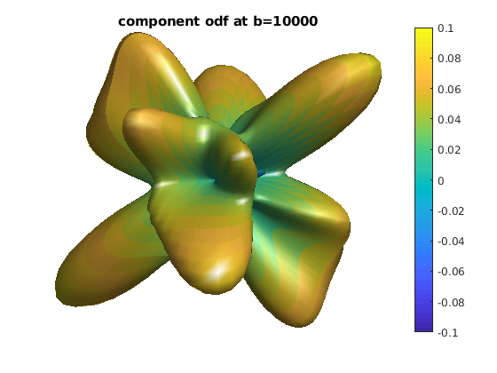
reconstruct ODF using indirect approach (Fig.9 in [1])
[x, y ,z] = sphere(64);
fvc = surf2patch(x, y, z, z);
odf_dirs = fvc.vertices;
nr = 100;
rs = linspace(0, 0.8, nr)';
qvec = repmat(sqrt(6 * 0.0025 * bval), [1, 3]) .* bvec;
pdf = zeros(length(odf_dirs), nr);
for ii = 1 : length(odf_dirs)
pdf_dir = odf_dirs(ii, :);
rvec = repmat(pdf_dir, [nr, 1]) .* repmat(rs, [1, 3]);
F = cos(rvec * qvec') / length(bval);
pdf_1d = F * diag(qvol) * data;
ind_negative = find(pdf_1d < 0);
if ~isempty(ind_negative)
pdf_1d(ind_negative(1):end) = 0;
end
pdf(ii, :) = pdf_1d;
end
odf_indirect = sum(pdf .* repmat(rs', [length(odf_dirs), 1]), 2);
odf_indirect(odf_indirect < 0) = 0;
odf_indirect = odf_indirect - min(odf_indirect(:));
odf_actor = fvc;
odf_actor.vertices = fvc.vertices .* repmat(odf_indirect, [1, 3]);
odf_actor.facevertexcdata = odf_indirect;
figure
h = patch(odf_actor);
view(0, 0)
lighting gouraud
shading faceted
camlight
set(h, 'EdgeColor', 'none');
colormap;
colorbar;
caxis([min(odf_indirect(:)), max(odf_indirect(:))]);
axis equal, axis off, axis tight
title('indirect odf');
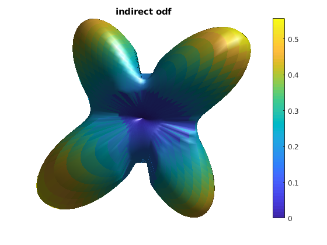